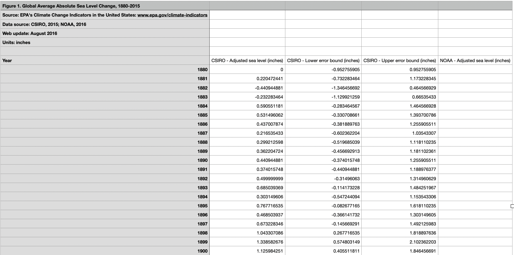
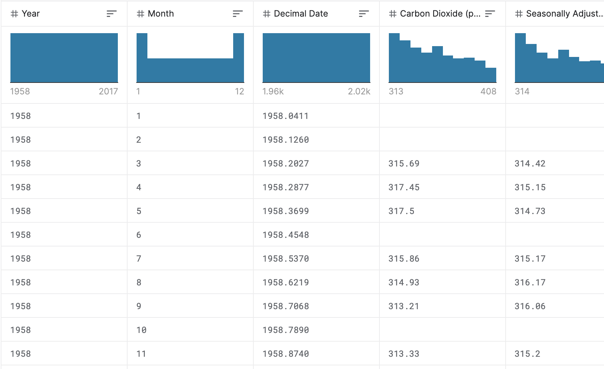
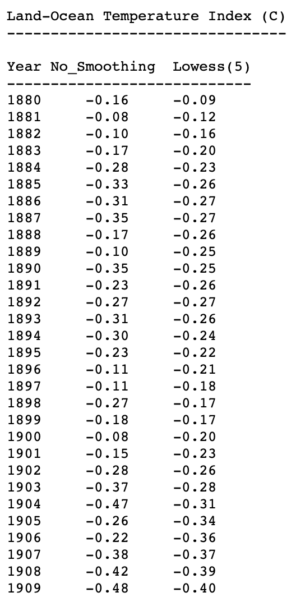
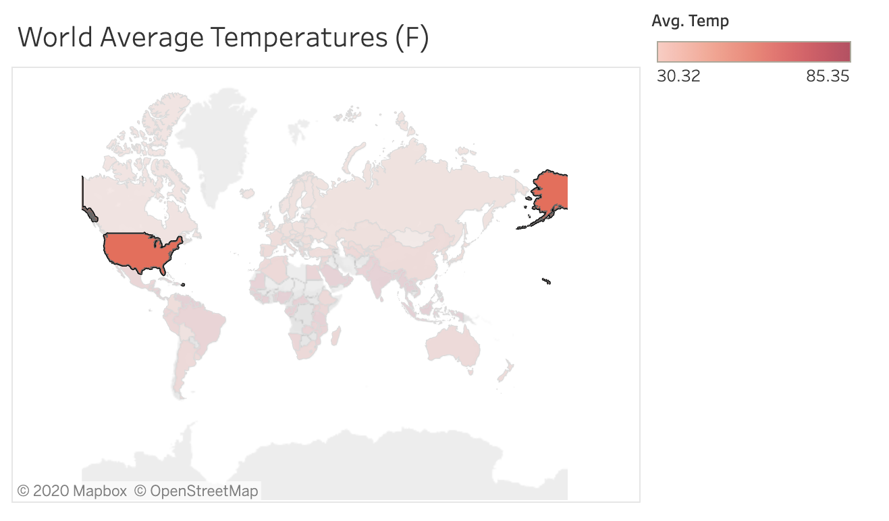
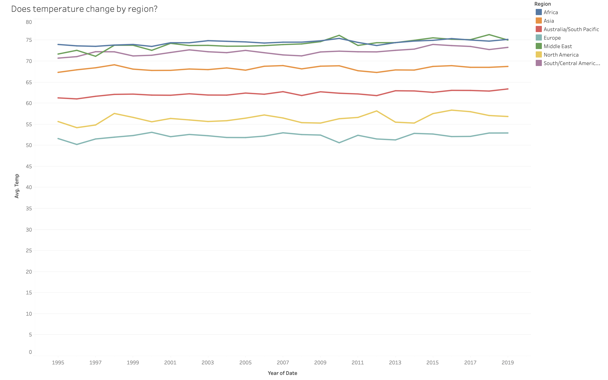
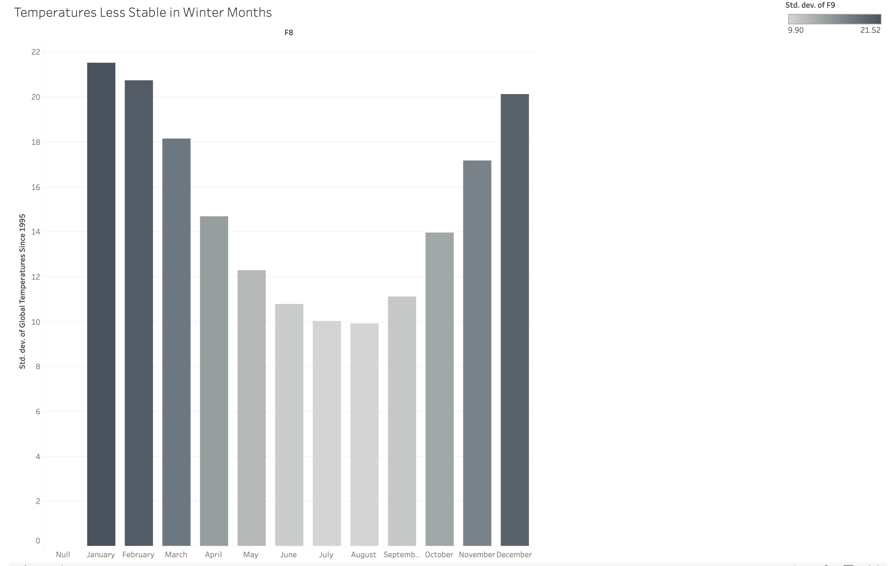
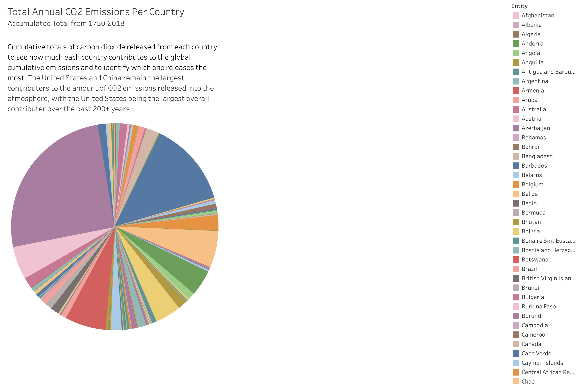

To observe consequences of climate change other than temperature, we found a data set from the EPA logging the increase in sea level since 1880. The graph below shows the increase in inches that sea level has changed since the starting level in 1880. We found that Sea level has an upward trend and has increased a total of 9 inches since 1880. With the consistnet upward direction, we can tell that sea-level is consistently rising, which is a clear effect of climate change.
Processes:
Data Selection: We chose data about climate change because we felt like it was a story that we and our classmates care about. We were interested to see what kind of relationships we could find between the simple temperature data from Kaggle, which is why we explored other data sets about global land-ocean temperature, carbon emissions, and sea-level. We had to do some cleaning to the Kaggle data set to get rid of scewed values and nulls that were automaticall listed at -99, which brought down our averages of all temperatures.



Exploration: We explored the data in 3 topics listing above: recent temperature changes, long term temperature changes, and environmental changes. We started by creating various worksheets with the data sets to understand the relationships between variables and to identify trends when creating line graphs, maps, and bar charts. In order to answer each question, we took into account the 4 design principles: truthful, functional, beautiful, insightful, and enlightening. Below we explain why we chose each type of graph.
Map
We chose to use a map as a couple of our visualizations because we wanted to give people an interactive and comprehensive view of the issue of climate change. Other types of charts that are not as beautiful or insightful make it difficult for the reader to understand what kind of an impact climate change has on different countries. We thought that seeing the impact on a recognizable layout would be more beautiful and insightful to the reader than simply listing each country's name and an attribute.

Line Chart

Bar Chart
When playing around with comparing months, we wanted to show the progression throughout the year and the associated values of standard devations in temperature. We tried a bubble chart, but this lost the monthly progression aspect. A map was not necessary and a line chart was too plain. So, we used this bar chart to demonstrate the changes in temperature across time while also adding hue to make it more functional and beautiful.

Pie Chart

Findings: We found that there was not a huge story to be told only using the last 25 years of temperature data. The overall change in temperature was almost not detectable, which did not give much insight into how the world's temperature is changing on a larger scale. This is why we implemented the data set containing information about the last 200 years, giving us more information about climate change is progressing. With the evidence of a long term change in temperature, we wanted to investiage other long term changes in our climate, which is why we found data about sea level and CO2 emissions. These data sets gave us a more holistic view of climate change other than just the temperature. We found that different visualizations were more effective than others at displaying each topic's message, and we landed with the above visualizations to demonstrate the story of climate change through our data sets.
Lessons Learned: Overtime, the amount of carbon released in the atmosphere seems to have a direct correlation with the rising and extreme temperature fluctuations and sea levels in the environment. While carbon dioxide is a natural greenhouse gas that gets emitted to the environment, anthropogenic activities such as burning fossil fuels have dangerously increased the amount of carbon in the atmosphere. These levels are very concerning and can pose great risks in the future. We can already see these factors impacting the environment through the rising, extreme fluctuating temperatures and rising sea levels. We also learned that it is important to vet your sources for information and make sure the data you have is truly telling the whole story. The temperature data from only the last 25 years had issues with it that we had to clean and then we found that it was not telling a large enough story.